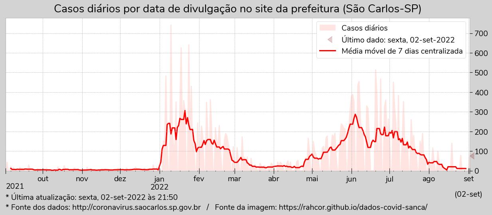
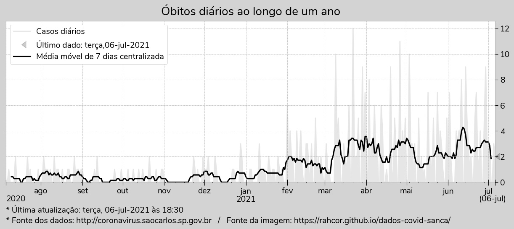

Dados coletados das imagens dos boletins do site da prefeitura: http://coronavirus.saocarlos.sp.gov.br
Arquivo com a fonte de cada dado coletado: urldict.json
Arquivo com todos os dados coletados: db.json
Construído com python e bibliotecas, pandoc e water.css.